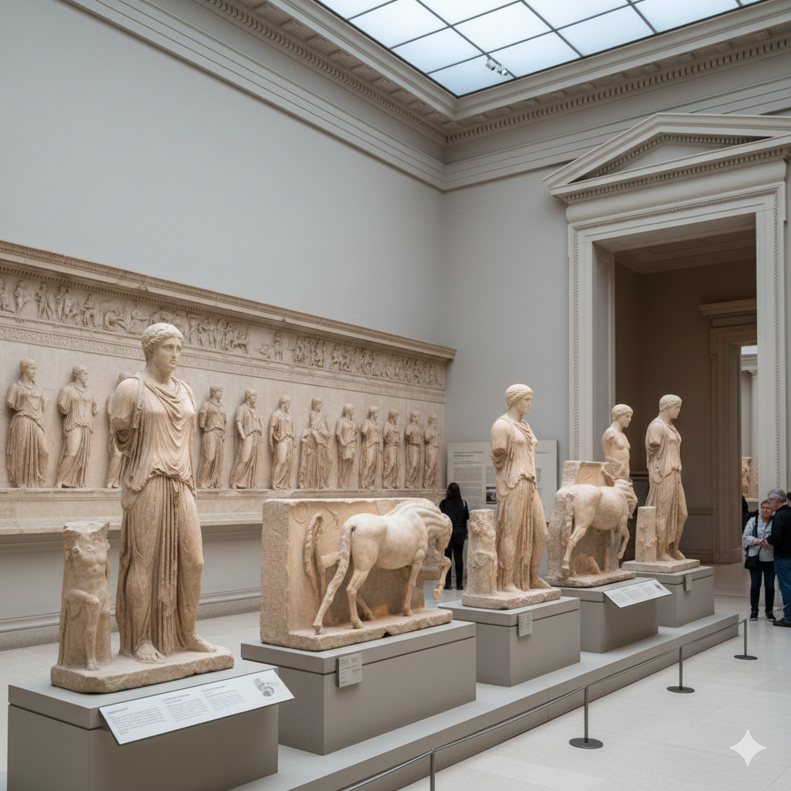
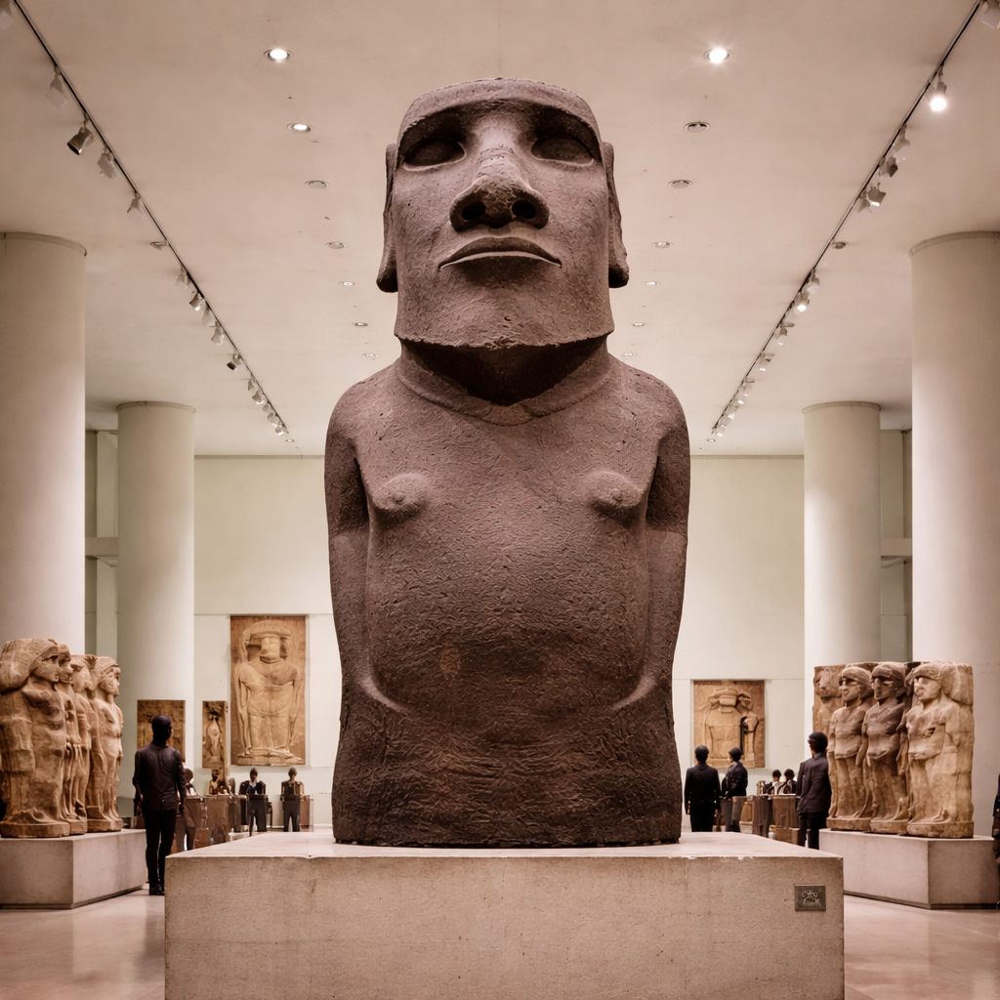
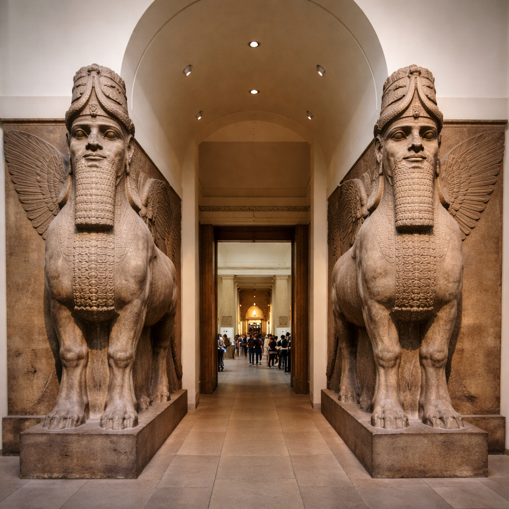

Marmurele Partenonului, cunoscute și sub numele de Elgin Marbles, provin din templul Partenon din Atena și datează din perioada 447–432 î.Hr. Aceste sculpturi din marmură de Pentelic includ frize, metope și statui dedicate zeiței Atena.

Moai-ul Hoa Hakananai’a, din Insula Paștelui, Chile, datează aproximativ între anii 1000–1200 d.Hr. și este realizat din bazalt vulcanic. Această statuie de peste 2,4 metri înălțime și câteva tone reprezintă un strămoș divinizat, protector al comunității Rapa Nui, și prezintă gravuri rituale rare pe spate, asociate cu cultul Tangata Manu (Omul-Pasăre).

Lamassu sunt statui monumentale din Mesopotamia (Irakul de azi), datând din jurul anilor 720–700 î.Hr., în perioada Imperiului Neo-Asirian. Aceste creaturi mitologice combină corpul de taur sau leu, aripile de vultur și capul uman, având rolul de a păzi intrările palatelor regale, simbolizând puterea, protecția divină și autoritatea regelui.